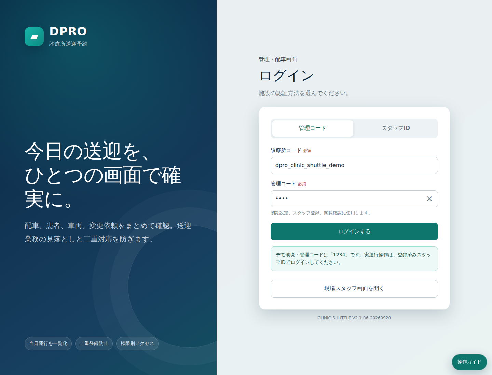
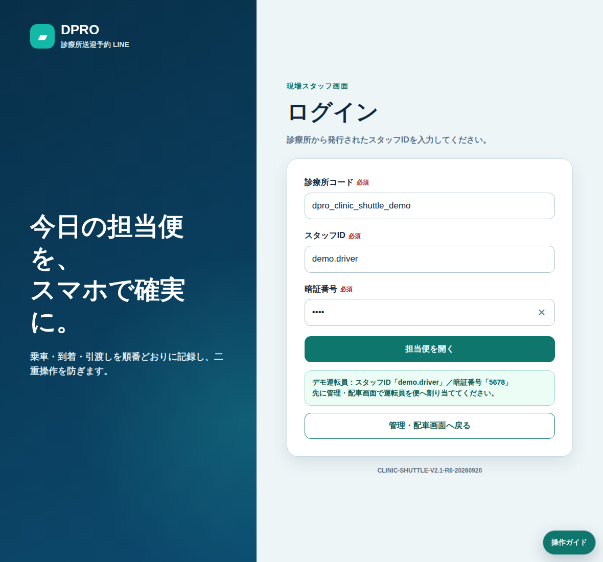

入口をまとめる。
WEB・LINE・電話代理登録の送迎受付を同じ予約台帳へ集約します。
PATIENT・FAMILY・DISPATCH・DRIVER
患者・ご家族の送迎予約、受付側の配車、運転員の乗降記録、診療後の帰宅便までを同じ送迎情報でつなぐ診療所向けDPROシステムです。

30秒で分かる
送迎受付だけをデジタル化するのではなく、予約・変更・配車・乗降・診療後の帰宅までを一つの運用へまとめます。
WEB・LINE・電話代理登録の送迎受付を同じ予約台帳へ集約します。
予約、変更依頼、車両、運転員、当日の送迎状況をPC・iPadで確認します。
迎車、乗車、診療所到着、診療後の帰宅便、自宅到着まで履歴としてつなぎます。
6 CORE FUNCTIONS
患者・ご家族と受付・配車担当、運転員の送迎情報を役割別画面で共有します。
希望日・時間、乗降場所、往復・片道などの送迎希望を受け付けます。
電話で受けた内容も受付が同じ送迎台帳へ登録できます。
欠席、時間変更、片道利用などの変更を整理して確認します。
当日の車両と担当者を確認し、送迎予定へ割り当てます。
迎車、乗車、診療所到着、引渡しなどの状態を現場から記録します。
帰宅送迎の確認から自宅到着・完了までを同じ履歴につなぎます。
FROM RESERVATION TO HOME
入口がWEB・LINE・電話でも、診療所では同じDPROの送迎情報として確認します。
患者・ご家族、または受付から送迎希望を登録。
日時、乗降場所、往復・片道、変更内容を確認。
車両・運転員を割り当て、当日運行を準備。
迎車・乗車・診療所到着をスタッフ画面から記録。
診療後の帰宅便、自宅到着、完了までを記録。
SCREENS BY ROLE
同じ送迎情報を共有しながら、患者・ご家族、受付・配車、iPad、運転員・スタッフで操作を分けます。
 FAMILY患者・ご家族
FAMILY患者・ご家族 IPAD配車iPad
IPAD配車iPad
STAFF運転員・スタッフSCOPE & SAFETY
DPRO 診療所送迎予約は送迎運用のためのシステムです。診療情報を扱う電子カルテではありません。
送迎予約、連絡、乗降場所、車両・担当、当日運行、帰宅便、送迎履歴など。
電子カルテ、診断、検査、薬剤、診療報酬・請求、医療判断などの医療情報・医療行為。
OFFICIAL PRICE
税込。DPRO SHOPのLINE構築・運用契約先向け追加サービスです。
初期費用・税込
税込
LINE構築77,000円、LINE運用3,300円/月は別途です。
PRODUCT DOCUMENTS
A4販売チラシ、操作体験シート、Quick Start、詳細マニュアルをPRODUCT SITEで確認できます。
FAQ
はい。受付側で代理登録し、WEB・LINEからの受付と同じ送迎台帳で確認できます。
いいえ。標準範囲は送迎運用です。電子カルテ、診断、検査、薬剤、請求、医療判断は標準範囲外です。
現在はDPROシステム単体での提供は行っていません。LINE構築・運用契約先向け追加サービスとしてご案内しています。
このページでは概要と料金を、PRODUCT SITEでは実画面・資料・操作を確認できます。